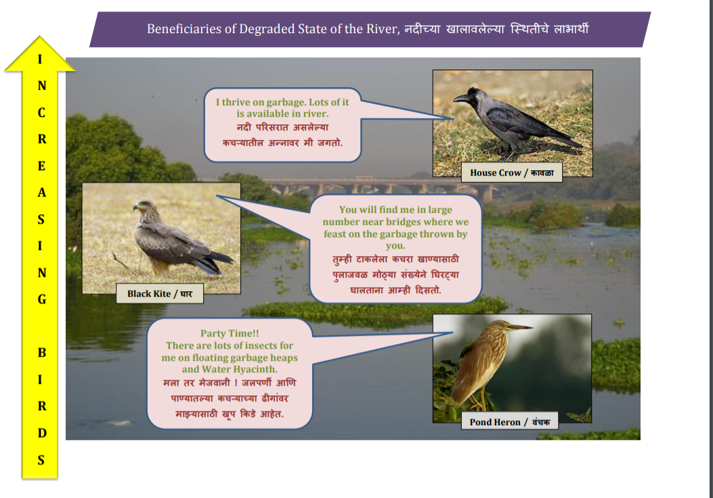

As seen in the above illustration, certain scavenging birds and birds that feed off dead and decaying matter have increased in numbers in areas in the vicinity of the Muthai river. This has been a consequence of the declining health of the river ecosystem and also a disturbance in the fauna of the surrounding. A large numbers of crows, black kite and pond heron amongst many others are seen thriving on the vast quantity of refuge that is being discharged into the river which serves as a forage for these birds. These birds are evidence to the fact that the river is in unhealthy condition